01Nail? What nail?
The unlikely start
Spoiler: I hated DIY and couldn't hit a nail straight to save my life. Nothing about me said "this one's going to spend his weekends hitting hot metal on purpose."
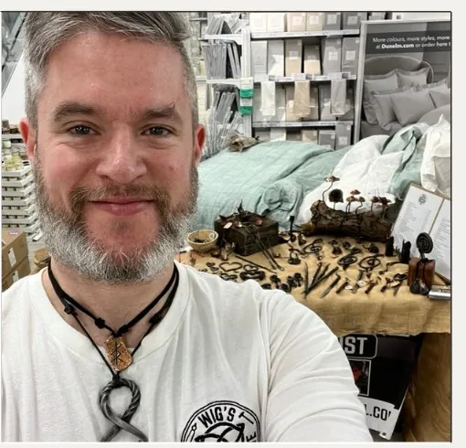
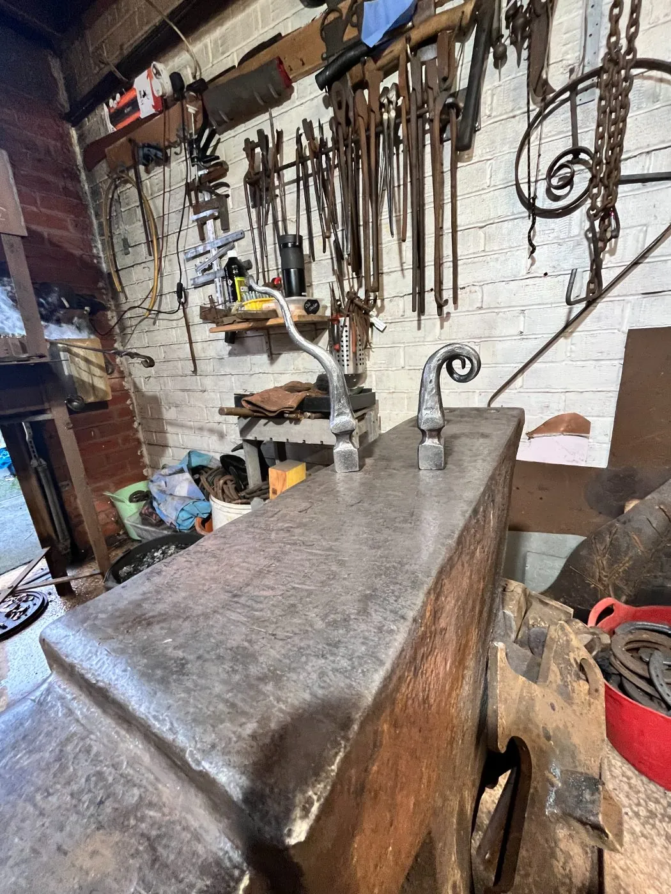
Cwmbran, South Wales
Bashed and Bent, Wonky Intent
A garage forge, fire, steel, and a bit of chaos — turning metal and scrap into something unique, upcycled and wonderfully wonky.
Croeso to my Wonky Forge, where the flames of creativity meet the hammer bash. I'm an enthusiastic (and proudly amateur) blacksmith, hammering away in my garage forge in Cwmbran, South Wales.
As a "contaminated" hobbyist and crafter, I pour my heart (and some blood and skin) into every piece. From whimsical wonders to practical pieces, no two creations are the same. Every bash, bend, and weld session tells a story, and I'd love to share that journey with you.
More than a hobby
"It's helped me manage my mental health, reconnect with creativity, and find moments of peace in the glow of hot steel. It's where I can breathe, tinker, and be."
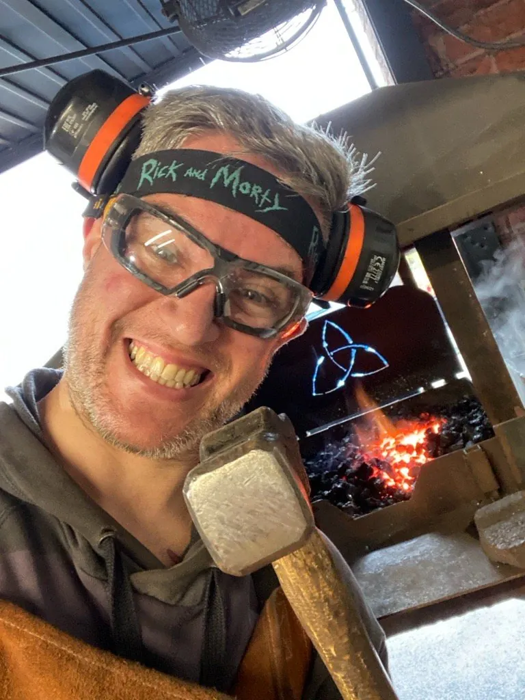
Wig (& Geordi) — Blacksmith Artist
Wig's journey
Spoiler: I hated DIY and couldn't hit a nail straight to save my life. Nothing about me said "this one's going to spend his weekends hitting hot metal on purpose."

My partner booked a knife-making experience at Oldfield Forge. I didn't realise it at the time, but that's when I got contaminated — the first strike of a hobby that would take over my spare time, my brain, and eventually… my car boot!!
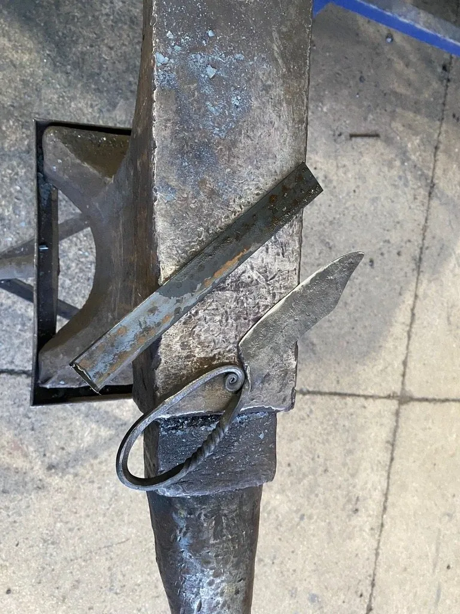
I've been blacksmithing for about 4 years now — learning through guidance, mentoring, a lot of dysgu, and a whole load of trial and error. A huge shout-out to Spike Blackhurst, who gave me guidance and the confidence to start building my own forge. With their help, we together created Geordi — my scrappy, portable, forge.
Yes. Geordi La Forge. I'm not sorry.
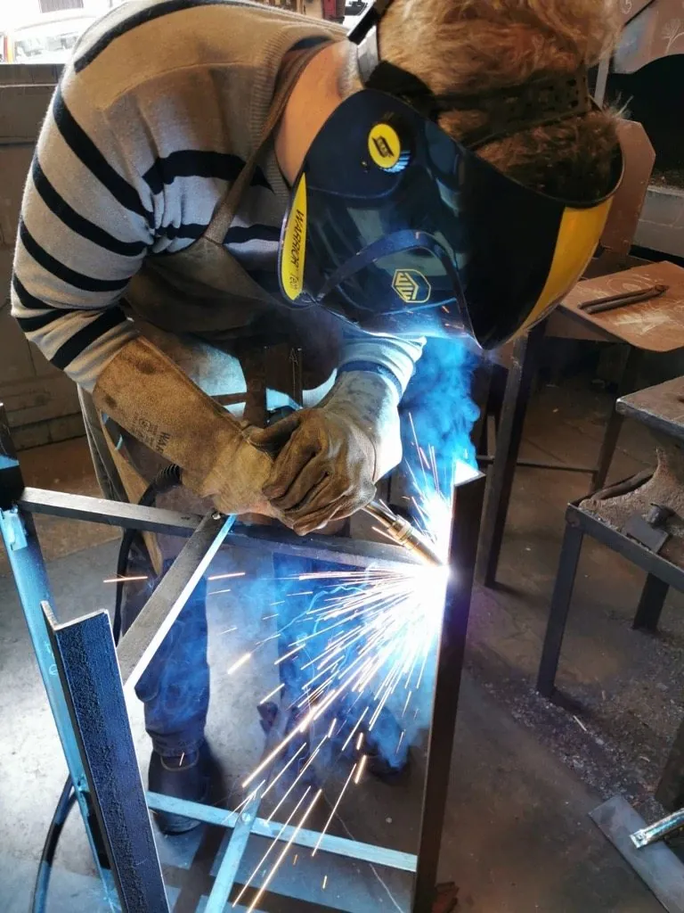
From Viking frying pans and medieval torches to jewellery, copper scoops, and castings — I never make the same thing twice. Every piece is hand-forged, upcycled, and proudly a bit wonky. That's the charm.
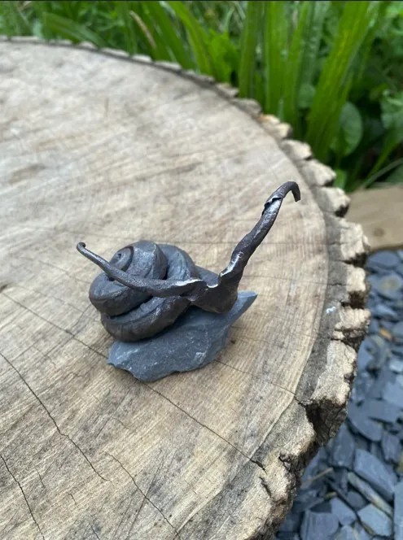
This is still just something I do in my spare time. But it's helped me manage my mental health, reconnect with creativity, and find moments of peace in the glow of hot steel. It's where I can breathe, tinker, and be.
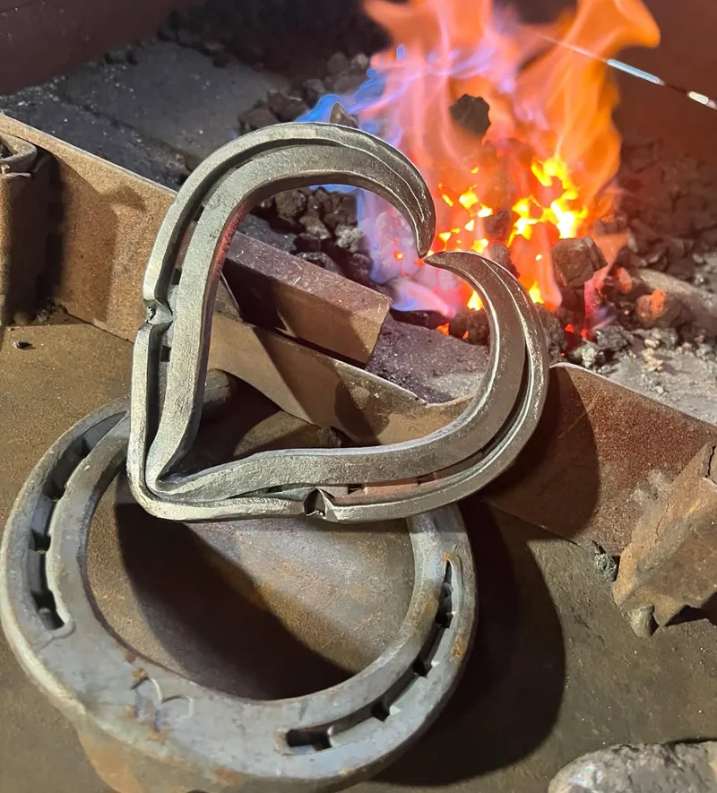
I've helped a few folks along their journey, whether they're just starting or already forging ahead. Not just with hammers and heat, but with the (sometimes boring) bits too: pricing, branding, and using GenAI for social media.
No pressure, no gatekeeping, just making and meaning.
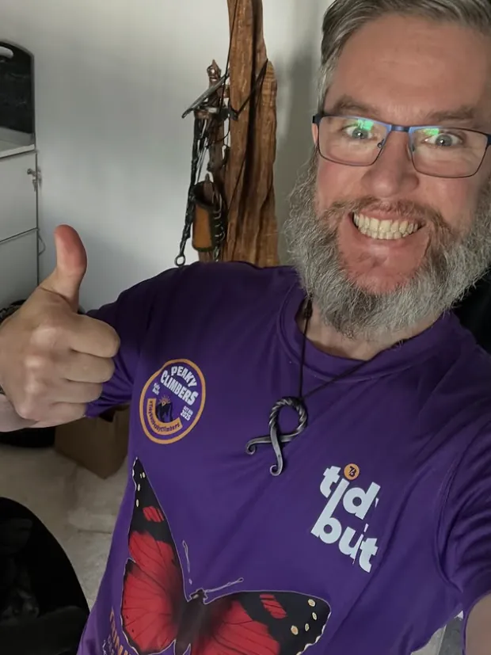
Crafting unique, one-of-a-kind pieces.
Forging and shaping steel into new forms.
Hammering, shaping, and detailing copper pieces.
Creating small cast items, from ornaments to fire tools.
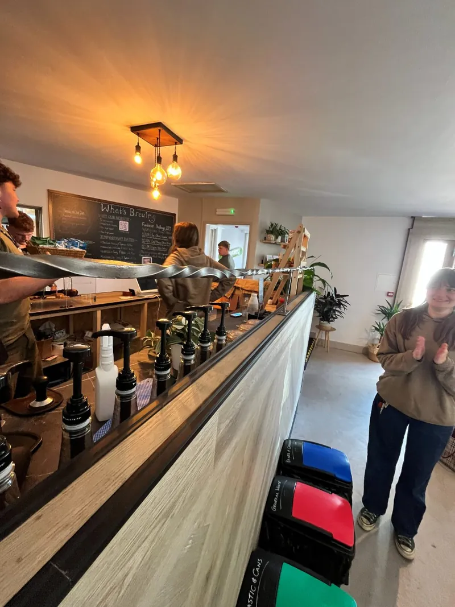
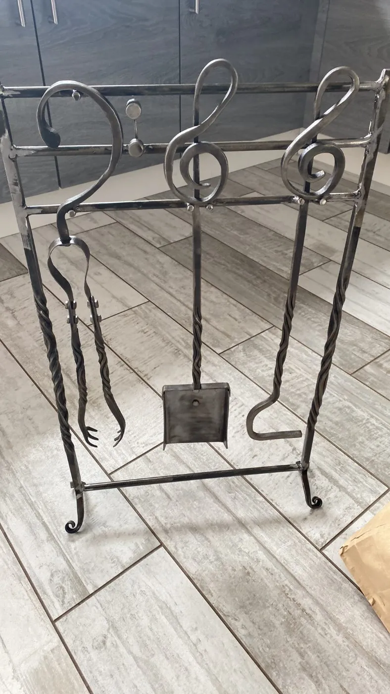
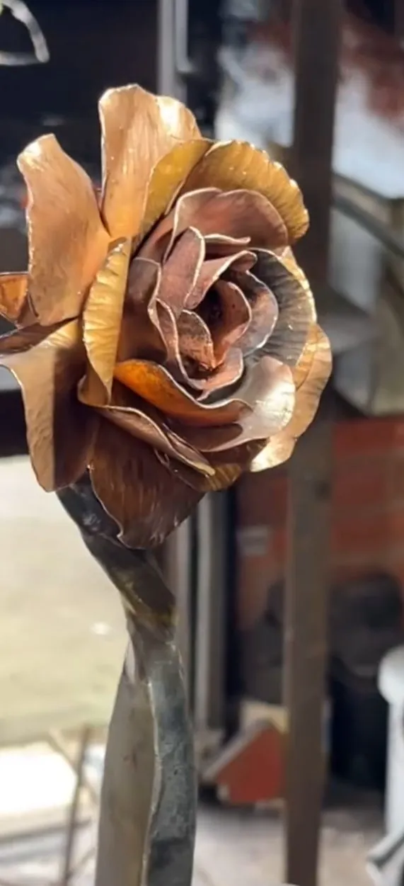
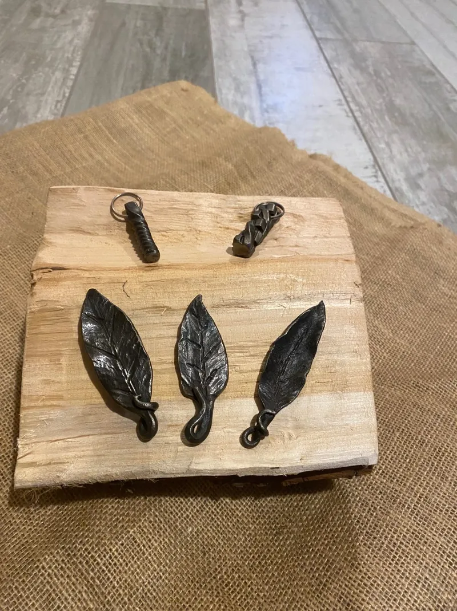
The catalogue
A wander through what's come off the anvil. These are the sort of things I make — not a stock list. If it's on Etsy, grab it there. If it isn't, ask: most can be made again (differently, obviously), or we can start from scratch on something bespoke.
Not on there? Ask. It probably can be.
The little folk
Two lots of little folk. The gnomes — pointed hats, a whole parade of them on the anvil — are ornaments, pure and simple. The ghosts sit out on the log and go over a tea light, so the flame comes out through the holes.
Every one comes out a different height, a different lean, a different face. Which is either a flaw or the entire point, depending on who you ask.
Bespoke
Bigger things, made for a particular place. A rail for Grounded, the café. A stand for the birds. Torches for a border. Tell me the spot and what it needs to do, and I'll work out the rest with the steel.
The best part of the whole thing: photos coming back from folks who've given a piece somewhere to live.
Got a piece of mine somewhere in your house or garden? Send me a photo — I'd love to put it up here.
What folks have said ↗Memorial pieces
Some pieces carry a good deal more than metal. Collins' Memorial — a treble clef with a heart in its tail — is one of those.
If you're thinking about a memorial piece, there's no rush and no script. Tell me about the person and what they loved, and we'll work out what it wants to be. If there's metal with a story attached to it, I can often work that in.
Start a quiet conversationThe whole story, on film
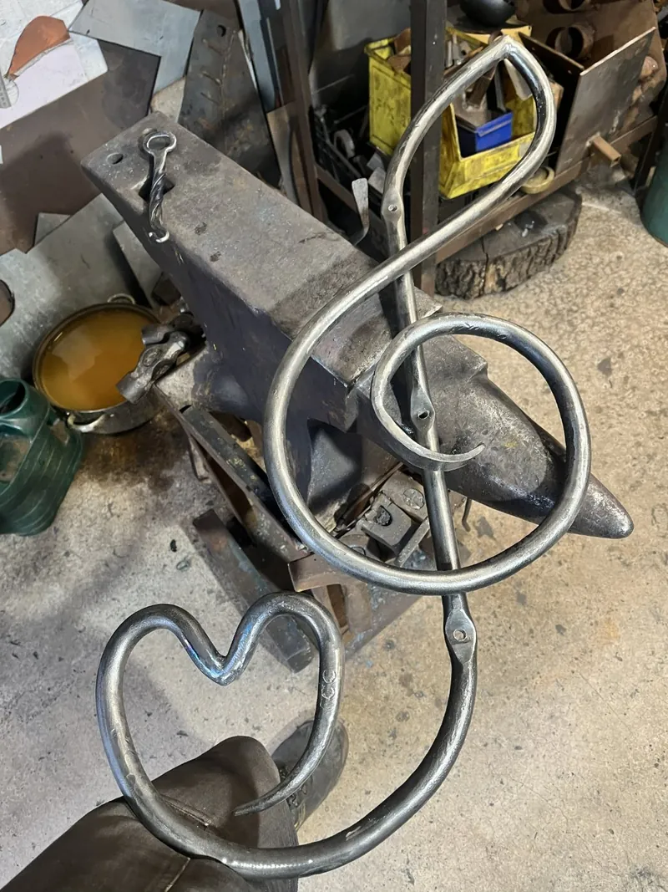
Once it's yours
It's steel, and if it lives outside it may show some oxidation or rust over time. Rubbing it down with a small amount of oil — olive, linseed, whatever's in the cupboard — will help it last for years to come.
If you'd rather treat it with lacquer or paint, just reach out and I'd be happy to talk you through it. Any issues, or just want to share some metal love? Don't hesitate.
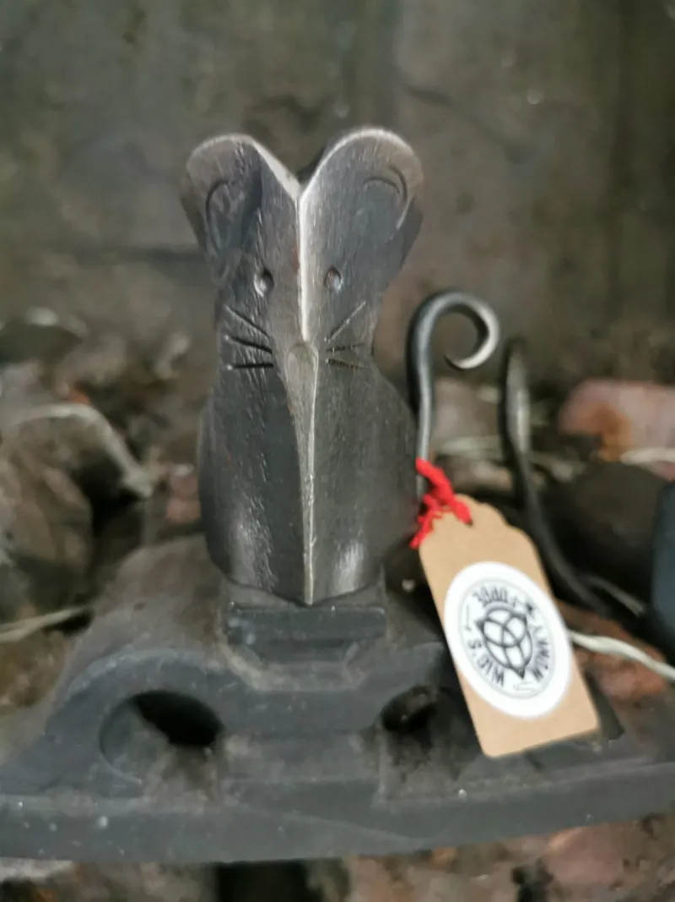
Every piece leaves here with a note in it. Diolch yn fawr iawn am eich pryniant — thank you very much for your purchase.
Let's chat
If you're curious about blacksmithing, creativity, or turning your own ideas into something tangible, I'm always happy to chat. Drop me a message anytime. No pressure, no gatekeeping, just making and meaning.
Straight to my inbox
wig@wonkyforge.co.ukMarkets
I get out to the odd market. Nothing's in the diary as I write this — drop me a line and ask where I'll be next, or keep an eye on the socials.
Charity & community
Collaborations happen as and when. If you're raising something for a good cause and a forged piece would help, get in touch.
Workshops — one day
Not yet. I'd love to share the wonky "wisdom" once I've got the space and the kit sorted. Say the word and I'll let you know when it happens.